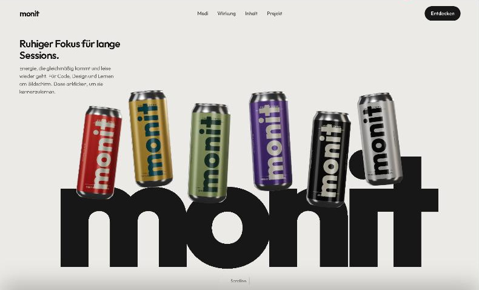

Ich entwerfe Websites, die sich wie ein Produkt anfühlen, mit klarer Idee.3D im Browser.Liebe zum Detail.
Ein Projekt, von der Idee bis online.


Monit
Launch-Seite für eine erfundene Energy-Drink-Marke: ruhiger Fokus für lange Sessions am Bildschirm. Sechs Modi als 3D-Dosen, Farbwelten, die mit dem Modus wechseln, und eine Energiekurve statt Werbesprüche.
Ich gehe in Rostock zur Hundertwasser-Gesamtschule und baue Websites, die sich anfühlen wie ein Produkt, nicht wie ein Formular.
Angefangen hat es mit Computern: PCs selbst zusammenbauen, Fehler suchen, verstehen, wie etwas funktioniert. Heute reizt mich die Stelle, an der Gestaltung und Technik sich treffen.
Inspiration hole ich mir aus Mode und Produktdesign: Archiv-Streetwear, Verpackungen, gute Kampagnen. Davon lerne ich, wie viel Zurückhaltung ein starkes Bild braucht.
Ehrlich zu meiner Arbeitsweise: Den Code meiner Projekte schreibe ich zusammen mit KI. Von mir kommen Idee, Gestaltung, jede Entscheidung und das Testen auf echten Geräten. Programmieren lerne ich gerade selbst, damit ich jede Zeile verstehe und erklären kann. Genau dafür will ich ab 2027 eine Ausbildung.
Kann ich
In den Projekten oben zu sehen.
- Konzept & Markenidee
- Typografie
- Farbsysteme
- Responsive Layouts
- Testen auf Laptop & Handy
Arbeite ich mit
Werkzeuge im Alltag.
- KI als Coding-Partner
- Git & GitHub Desktop
- GitHub Pages
- PC-Hardware
- Windows-Fehlersuche
Lerne ich gerade
Damit ich Code selbst schreibe und erkläre.
- HTML
- CSS
- JavaScript
- three.js Grundlagen
- ab 2027AusbildungFachinformatiker Anwendungsentwicklung oder Mediengestalter Digitalgesucht
- Nov 2026MonitEigenes Projekt: Marke, Gestaltung und 3D-Website, live auf GitHub Pages.Projekt
- heuteHundertwasser-Gesamtschule RostockSchülerSchule
Lass uns reden.
Ich freue mich über Nachrichten zu Ausbildungsplätzen, Praktika oder einfach Feedback zu meinen Projekten.
Lebenslauf und Zeugnisse schicke ich gern per E-Mail.